| 日付 | 2014年3月22日（土） |
|---|---|
| 山域 | 箱根 |
| メンバー | 家族（妻、長女・3歳、長男・0歳） |
| 山行形態 | 子連れ日帰り |
| アクセス | 車 |
| ルート (Map) | 幕山公園 (9:10) - (10:39) 幕山 (10:46) - (11:37) 南郷山 (12:26) - (13:50) 五郎神社 - (14:12) 幕山公園 |
3月になってもまだまだ多くの山に雪が残っている。
昨年の3月はそこそこ高い山にも登れていたのだが…
本日は箱根の南方にある幕山に行くことにする。
過去2回訪れている山で、前回は大雪で苦労した記憶がある。
今回は幕山を登った後、お隣の南郷山まで歩く
ロングコースに挑戦してみることにする。
幕山の駐車場に到着。標高180m。
梅祭りは先週で終わっているため、すんなり駐車場に車を停めることができた。
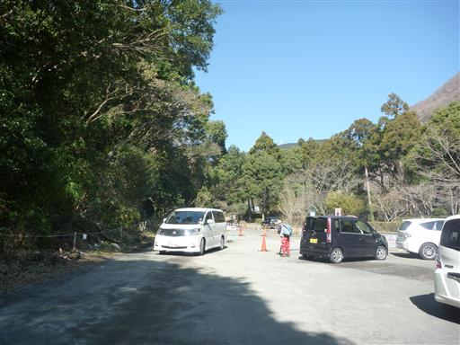
駐車場から少し歩くと、幕山公園の梅林が見えてくる。
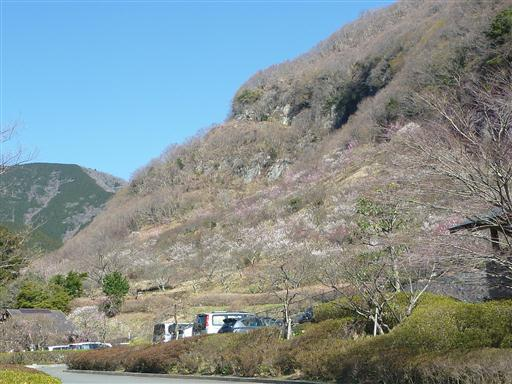
梅の花。まだまだ咲いている枝は多い。

本日は快晴。青空が美しい。
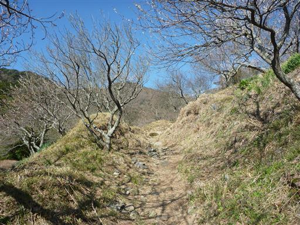
足元には散ってしまった梅の花弁がたくさん落ちている。
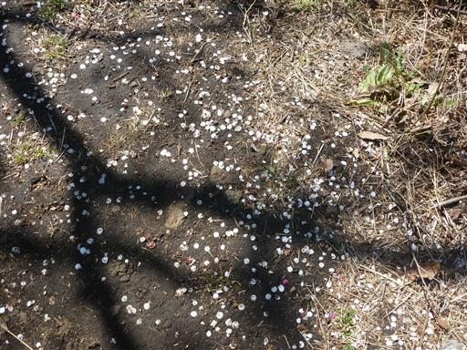
ゆっくり花を愛でながら登っていく。
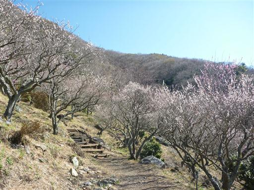
1ヶ月ぶりの山登りだが、娘は比較的快調に登っている。
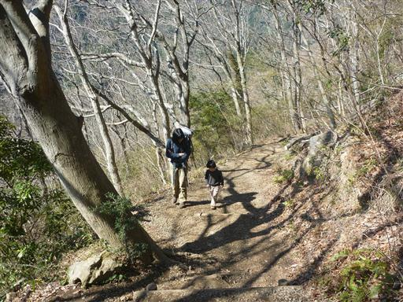
カヤトが広がってくると、幕山山頂はもうすぐだ。
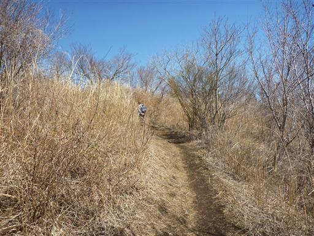
幕山山頂に到着する。標高625m。
小広く開けた山頂は、それなりに賑わっている。
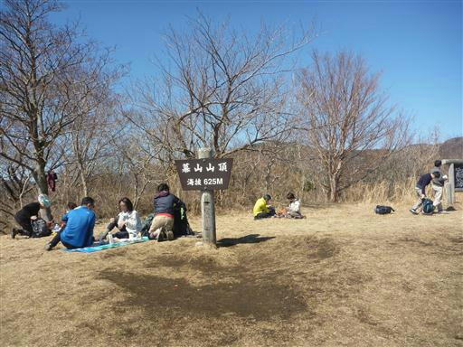
3度目の幕山山頂で、初めて天候に恵まれる。
眼下には真青な海、遠くには伊豆大島が見えている。
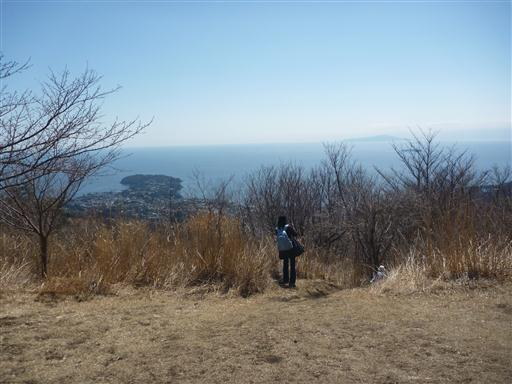
幕山の山頂はまだ道半ば。小休止をとっておやつを食べたら、すぐに山頂を出発する。
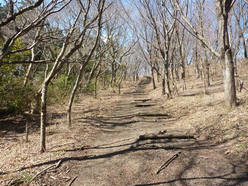
下山道と南郷山方面との分岐点。
今回初めて南郷山方面の道に歩を進める。
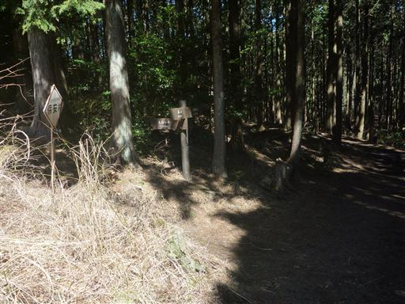
辺り一帯植林地帯になる。案外つまらない道だ。
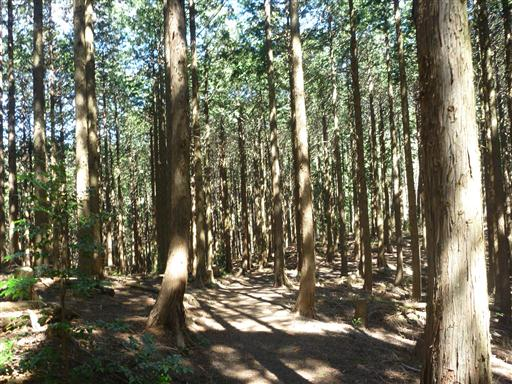
途中で車道を横切る。通る車はほとんどなさそうだ。

植林地帯を過ぎると笹が広がる登山道になる。
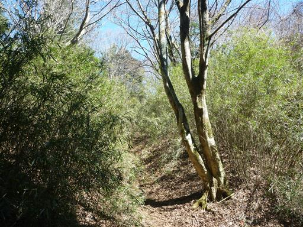
自鑑水。植林地帯の中にある陰気な池だ。
源頼朝が敗戦後にここで自害しようとしたという言い伝えが残っている。
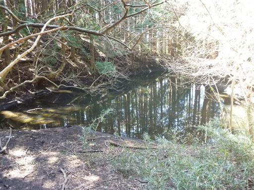
池のそばに変わった形の檜の木がある。
幹の根元でぐるりと一周ねじれているが、何があったのだろう？
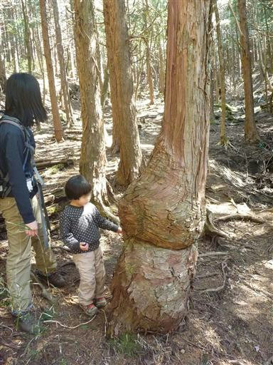
ところどころ笹が覆いかぶさっている場所があって鬱陶しい。
娘は枝を拾って上機嫌。疲れを忘れてぐんぐん登っていく。
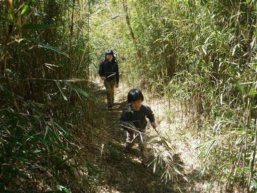
大きく笹が切り開かれた場所に出てくる。山頂まではもうすぐだ。
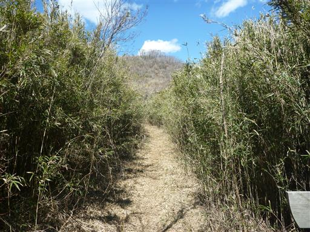
ようやく南郷山山頂に到着する。標高611m。
登山道ではあまり人と出会わなかったが、こちらの山頂にもそこそこ人がいる。
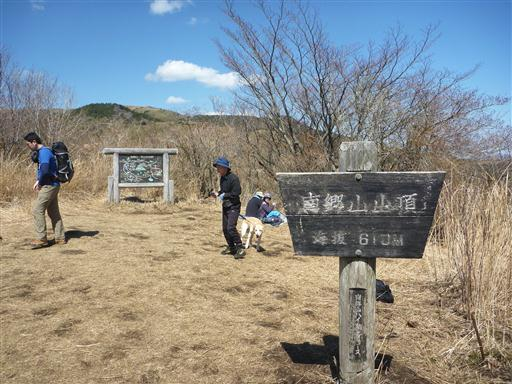
山頂からは周囲の山々を望むことができる。
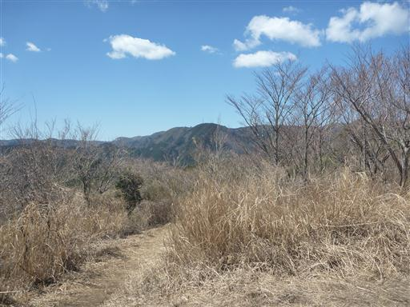
そして、この山からも真青な海が望める。
この山頂でゆっくり腰を下ろして昼食タイムだ。
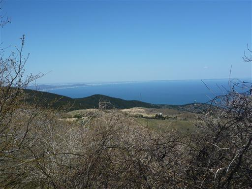
昼食をとったら下山開始。
海と真鶴半島を眼下に望みながら下って行く。
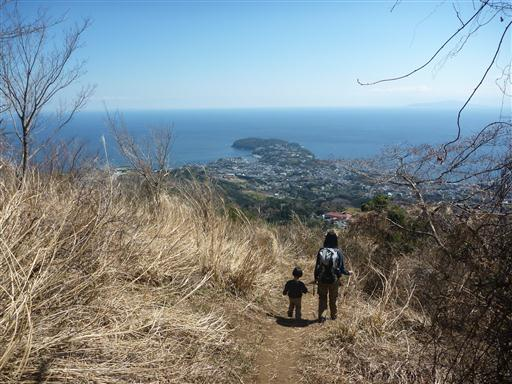
地面には黒い実のようなものと毛虫のような花（？）が無数に落ちている。
頭上を見上げると正体はこの木のようなのだが、何の木だろうか？
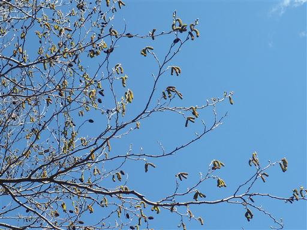
下山道はあまり整備されておらず、倒木だらけだ。
子供を背負いながらだと木を潜るのが非常に大変で、かなり苦労する。
逆に娘は背が低いので、ほとんど障害になっていないようで、うらやましい。
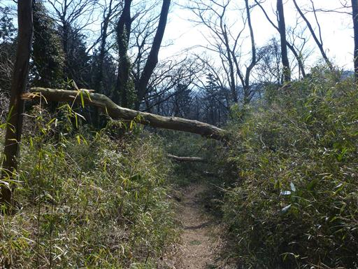
疲れてきてはいるが下山も快調に歩いてる。
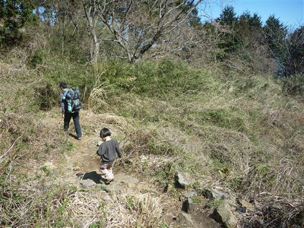
左手にゴルフ場が見えてきた。
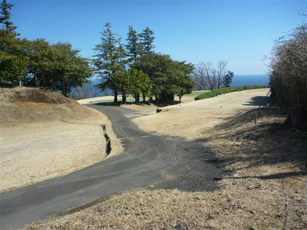
ゴルフ場の辺りから道は車道になる。ここからは長い車道歩きだ。
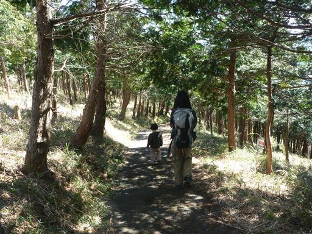
柑橘類の無人販売所。一袋100円で売っていたので、ゴールデンオレンジを購入。
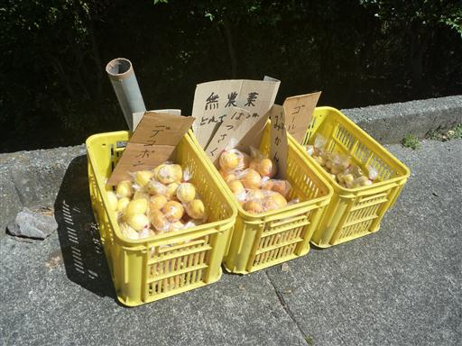
道端に黄色いスイセンの花が咲いている。
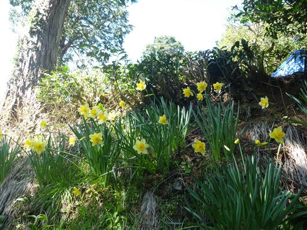
温暖な気候の場所なのでミカンの栽培が盛んだ。
ミカンはもう終わりかけだが、親切なおじさんに、いくつかミカンを頂く。
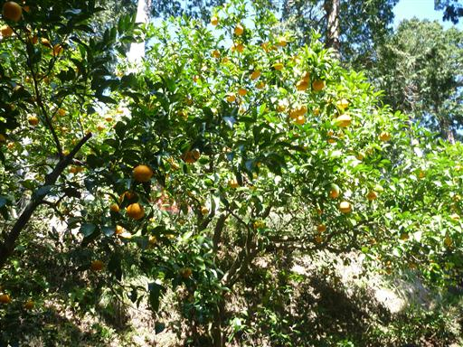
だいぶ下界まで下りてきた。この辺りに住んでいれば毎日海が眺められそうだ。
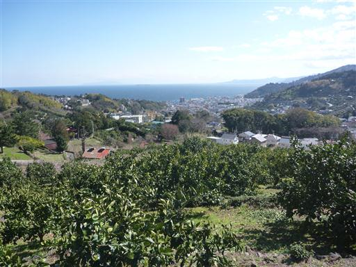
五郎神社近くに下りてくる。標高110m。
ここから幕山公園まで車道を30分程度なのだが、娘は疲れているため一人車をとりに行く。
最近この行動パターンが多い。
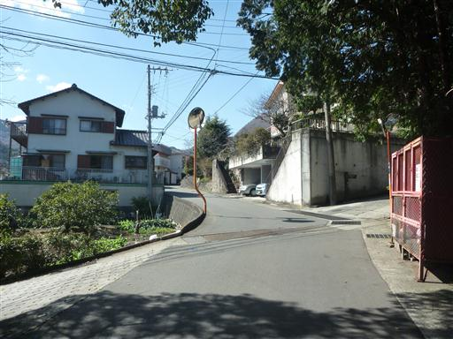
幕山公園に戻ってくる。
本日は娘が快調に歩けたし、梅の花、青い海を眺められたしで、良い山行だった。
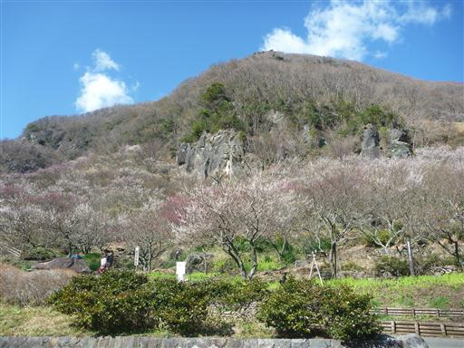